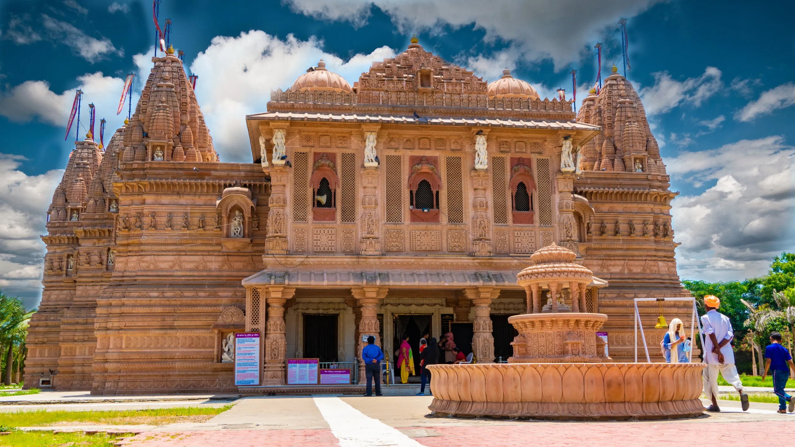
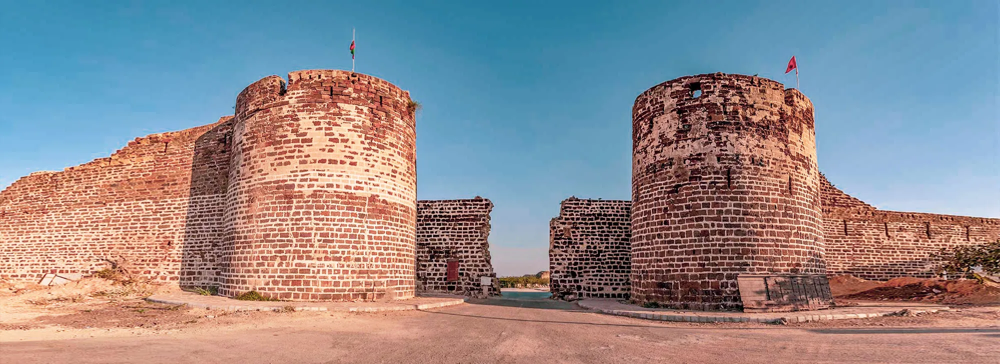
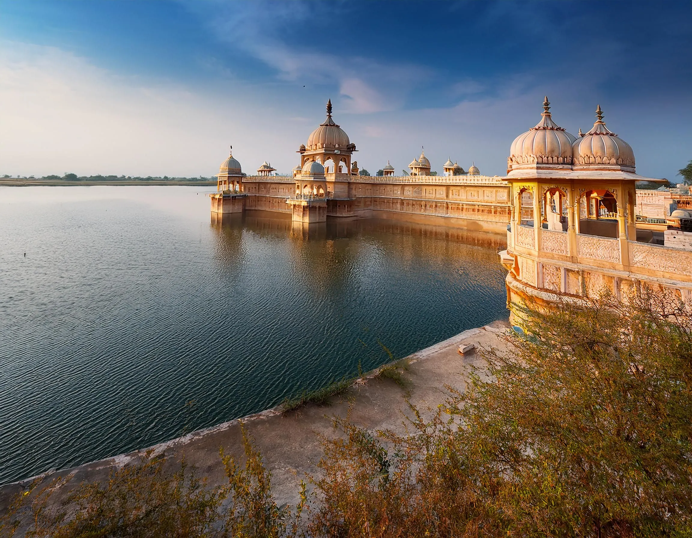
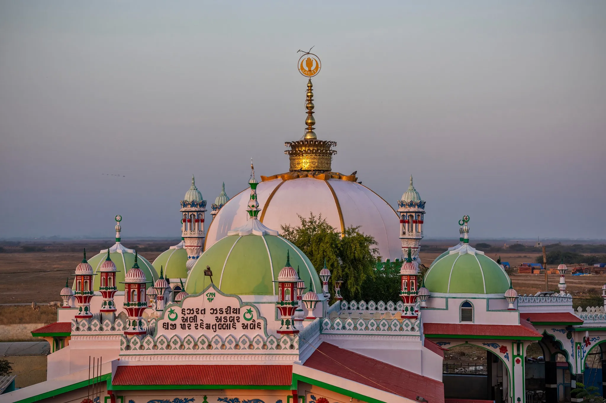
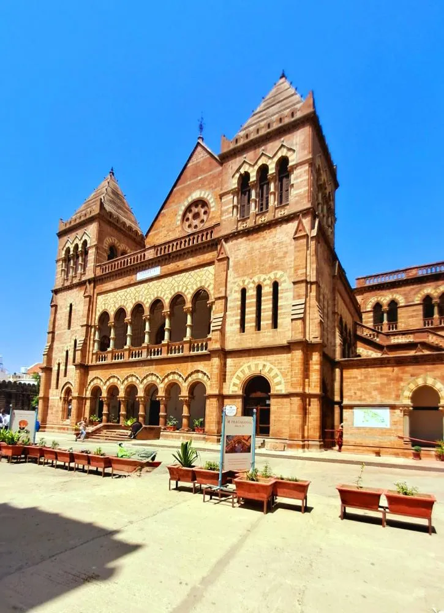
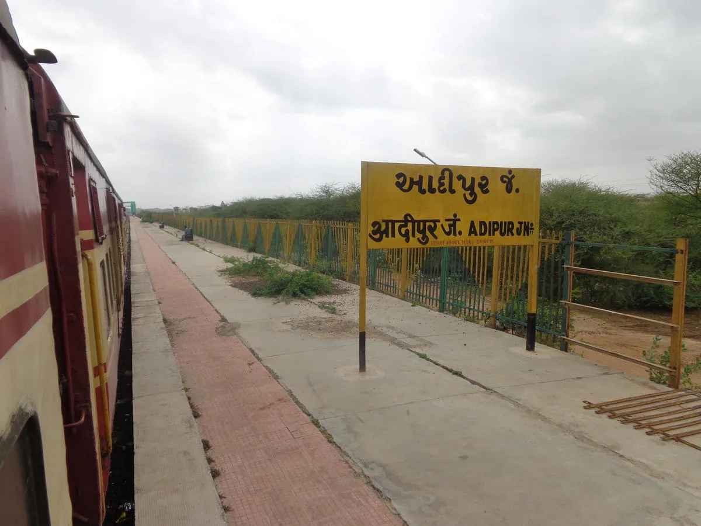

From the pristine beaches of Mandvi to the ancient ruins of Dholavira, from the salt flats of the White Rann to the spiritual temples of Mata na Madh — Kutch offers a treasure trove of destinations for every traveler. Explore our comprehensive guide to plan your perfect Kutch adventure.
Major Destinations
The must-visit places in Kutch

Bhuj
The cultural heart of Kutch with 500 years of royal history. A living museum of palaces, bazaars, and the perfect base for exploring the region.

Dhordo - White Rann
Gateway to the world-famous White Rann of Kutch. Experience the magical salt desert under moonlight at the Rann Utsav (Nov-Feb).

Mandvi
Premier beach destination with pristine shores, Vijay Vilas Palace, and 400-year-old shipbuilding tradition. Perfect for unwinding.
Gandhidham
Kutch's most cosmopolitan city, gateway to Kandla Port. Modern urban base with wide avenues, malls, and vibrant food scene.
Heritage & History
Ancient temples and archaeological marvels

Dholavira
UNESCO World Heritage Site. One of the largest Harappan civilization sites with 5000-year-old ruins and sophisticated urban planning.

Bhadreshwar Jain Temple
One of India's oldest Jain temples dating back to 516 BCE. Marvel of Sekhari architecture with intricate carvings.

Anjar
The oldest capital of Kutch (650 AD). Town of legends, famous for Jesal-Toral story, metalwork, and old-world charm.

Lakhpat
Ghost town on the India-Pakistan border. Once a thriving port, now a hauntingly beautiful walled city with Sikh Gurudwara.
Spiritual Destinations
Sacred sites and pilgrimage centers

Mata na Madh
Most significant spiritual destination dedicated to Ashapura Mata. Lakhs of devotees walk on foot during Navratri.

Narayan Sarovar & Koteshwar
Twin spiritual destinations on India's westernmost tip. One of five holiest Hindu lakes and stunning cliff-side Shiva temple.

Haji Pir Dargah
Revered shrine near India-Pakistan border. Symbol of communal harmony, worshipped by both Hindus and Muslims.

Mamaidev
Revered saint and philosopher, 4th Guru of Baarmati Panth. Royal Preceptor to Jadeja dynasty with prophetic teachings.
Nature & Adventure
Scenic landscapes and wildlife

Kalo Dungar
Highest point in Kutch (462m). Panoramic Great Rann views, Dattatreya Temple, and evening jackal feeding ritual.

Kadia Dhrow
'Grand Canyon of India' - spectacular multi-colored rock formations, vibrant sandstone bands in red, yellow, and orange.

Road to Heaven
Scenic drive through vast barren landscapes to India's western edge. Mystical journey through desert and sea.
Coastal & Port Towns
Where the desert meets the sea

Mundra
India's largest private port alongside historic walled city. Fascinating contrast of modern industry and spice trade heritage.

Kandla
Major port city and commercial hub. Gateway for trade and transit point for travelers arriving by sea.

Jakhau
Fishing port and salt production center. Off-beat destination with authentic coastal Kutchi life and seafood.
Other Significant Towns
Important urban centers and residential hubs

Adipur
Twin city of Gandhidham. Residential hub with local markets and easy access to port areas.

Madhapar
Recognized as the richest village in India with massive NRI deposits. A prosperous town known for its grand bungalows and strong community roots.

Nirona Village
A vibrant hub of cultural heritage renowned for unique crafts like Rogan painting, Copper Bell Art, and Lacquer work.
Looking for Hidden Gems?
Discover the secret treasures of Kutch that only locals know — from bird sanctuaries to ancient ruins off the tourist trail.
Explore Hidden Gems →